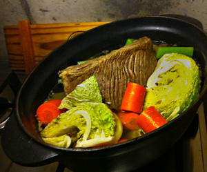

Pot-au-feu
5 von 61Kg. Siedfleisch mit Wasser bedeckt in eine Pfanne geben und aufkochen. Das Fleisch 5 Minuten leise köcheln lassen, herausheben und beiseite stellen. Wasser weggiessen.
1 Zwiebel mit der Schale halbieren und mit der Schnittfläche nach unten in einer Bratpfanne stark bräunen. 1 Sellerie in Würfel, 2 Karotten in grobe Stücke schneiden. 1 Wirz vierteln und den Strunk entfernen. Wasser in einer grossen Pfanne aufkochen. Siedfleisch, Zwiebelhälften, Pfeffer, Nelken und Lorbeerblätter beigeben. Das Wasser salzen. Alles auf kleiner Stufe ca. 1 ½ Stunden köcheln lassen, bis das Fleisch weich ist. Wenn nötig den entstandenen Schaum und die Trübstoffe mit einer Schaumkelle abschöpfen. 45 Minuten vor Ende der Kochzeit alle vorbereiteten Gemüse dazugeben und mitkochen.
Zum Servieren das Fleisch aus dem Sud heben. Quer zum Faserlauf in fingerdicke Tranchen schneiden. Mit einem Teil der Suppe und dem Gemüse anrichten. Selleriegrün darüber zupfen.
Zum Servieren frischen Meerrettich fein darüber reiben. Nach Belieben Markknochen mitgaren. Diese vor dem Garen mit fliessendem kalten Wasser 5 Minuten wässern.
